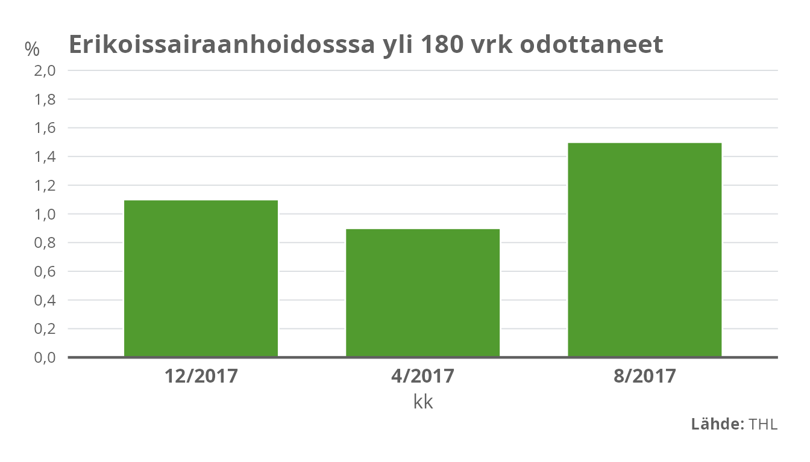
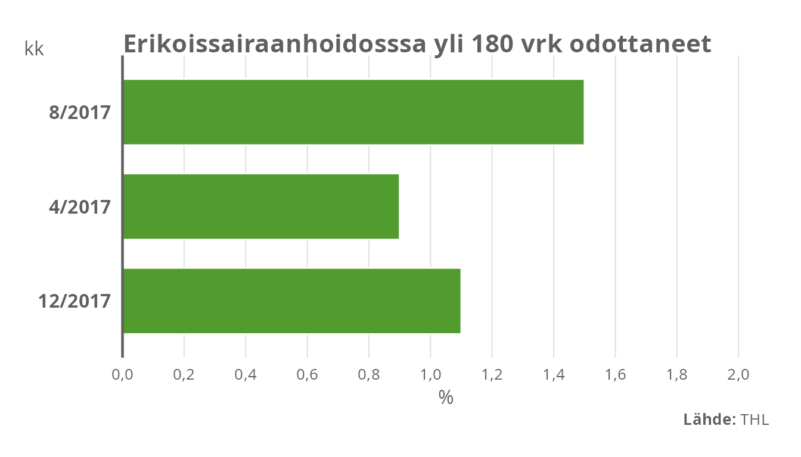
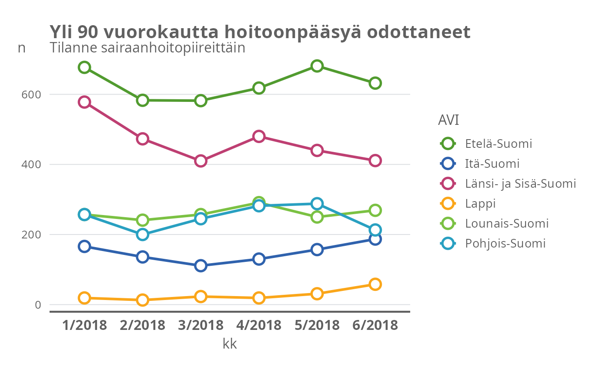

thlGraphs.Rmd
# Download the data
data("yli180")
## using theme_thl() will apply the basic THL formulations:
mycaption <- c(expression(paste(bold("Lähde:"), " THL")))
ggplot(data = subset(yli180, grepl("2017", kk)), aes(x = kk, y = pros)) +
geom_col_thl(fill = palette_thl(name = "area", n = 1)) +
scale_y_continuous_thl(limits = c(0,2)) +
labs(title = "Erikoissairaanhoidosssa yli 180 vrk odottaneet",
caption = mycaption, y = "%") +
theme_thl()
## Similarly, a horizontal bar plot:
ggplot(data = subset(yli180, grepl("2017", kk)), aes(x = kk, y = pros)) +
geom_col_thl(fill = palette_thl(name = "area", n = 1)) +
scale_y_continuous_thl(limits = c(0,2)) +
labs(title = "Erikoissairaanhoidosssa yli 180 vrk odottaneet",
caption = mycaption, y = "%") +
coord_flip() +
theme_thl(horizontal = TRUE)
## Reshaping the data to long format
data("yli90")
yli90l <- reshape(yli90, varying = names(yli90)[2:7], v.names = "n",
timevar = "kk", idvar = "AVI", times = names(yli90)[2:7],
direction = "long")
g <- ggplot(yli90l, aes(x = kk, y = n, group = AVI, col = AVI)) +
geom_line_thl() +
geom_point_thl() +
scale_color_manual(values = palette_thl("quali", n = length(unique(yli90l$AVI)))) +
ggtitle("Yli 90 vuorokautta hoitoonpääsyä odottaneet",
"Tilanne sairaanhoitopiireittäin") +
theme_thl()
g